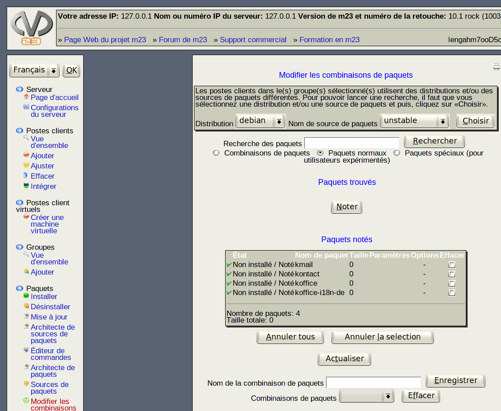

suivant:
Pas à pas
monter:
Paquets
précédent:
Information supplémentaire
Table des matières
Modifier les combinaisons de paquets
Par ce dialogue, vous pouvez modifier des combinaisons de paquets existantes, les effacer ou en créer des nouvelles.

Sous-sections
Pas à pas
Effacer une combinaison
Im-/Exporter des paquets présélectionnés
Notez
dodger 2014-01-22